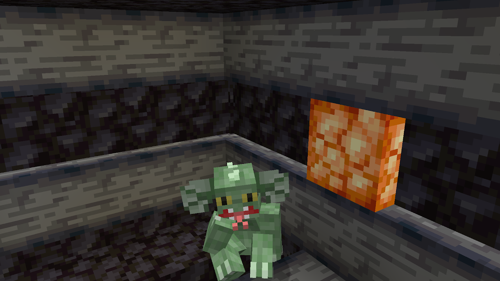

Объект
SCP-295-SP
Класс объекта
Особые условия содержания
К SCP-295 запрещено приближаться сотрудникам без комплекта химзащиты. Доступ к объекту разрешён только персоналу с уровнем доступа 2 и выше. Объект должен содержаться в базовой камере типа C3.
Описание
В своей обычной форме SCP-295 выглядит как гуманоидный ящер зелёного окраса ростом примерно 180 см. Объект способен принимать облик людей и имитировать их поведение. Объект способен принять облик человека, если видит его напрямую, на фотографии, видеозаписи или [УДАЛЕНО]. Объект также может принимать облик статуй.
При смерти человека, повреждении фотографии или статуи человека, облик которого принял SCP-295, объект возвращается в свой изначальный облик.